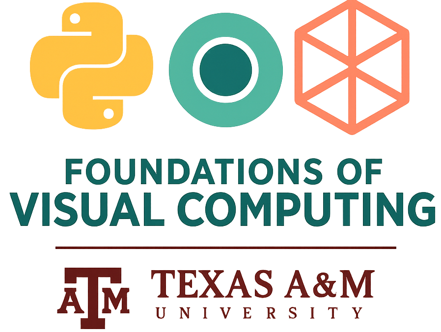

VIST 172, Fall 2025 | Texas A&M University, College Station
This course emphasizes hands-on experience in introducing the fundamentals of visualization software development using the Python programming language, with the turtle graphics module for 2D visualization, and the Python scripting interface to Maya. Emphasis will be placed on 2D concepts and techniques, while also providing some experience working in 3D. These principles provide the foundation for higher-level programming coursework and are the basis for highly sought-after skills within the animation, gaming, film, and related industries. This course is designed for undergraduate students with little to no prior experience in programming.
| Week | Topic | Lecture Slides | Lab and Programming Challenge | Quizzes |
|---|---|---|---|---|
| Week 1 |
|
Slides | Lab 1 |
Quiz 1 |
| Week 2 |
|
Slides | Challenge 1 |
Quiz 2 |
| Week 3 |
|
Slides | Lab 2 |
Quiz 3 |
| Week 4 |
|
Slides | Challenge 2 |
Quiz 4 |
| Week 5 |
|
Slides | Lab 3 |
Quiz 5 |
| Week 6 |
|
Slides | Challenge 3 |
Quiz 6 |
| Week 7 |
|
Slides | Lab 4 |
Quiz 7 |
| Week 8 |
|
Slides | Challenge 4 |
Quiz 8 |
| Week 9 |
|
Slides | Lab 5 |
Quiz 9 |
| Week 10 | Transformation I
|
Slides | Challenge 5 |
Quiz 10 |
| Week 11 | Transformation II
|
Slides | Lab 6 |
Quiz 11 |
| Week 12 | Function I
|
Slides | Challenge 6 |
Quiz 12 |
| Week 13 | Function II
|
Slides | Lab 7 |
Quiz 13 |
| Week 14 | File Handling
|
Slides | Challenge 7 |
Quiz 14 |
| Week 15 |
|
Slides | Lab 8 |
Quiz 15 |
Lecture codes will be posted here!
Instructor: Suryansh Kumar (suryanshkumar@tamu.edu)
TA: TA1 (abc@tamu.edu)
TA: TA2 (abc@tamu.edu)
TA: TA3 (abc@tamu.edu)
Grader: GA1 (abc@tamu.edu)
Grader: GA2 (abc@tamu.edu)
Office Hours: TBA